Camera Configuration
The setups need a camera to record the sessions and to monitor the task in real time. Since there's a need for the video to be recorded with some specific settings, this section contains instructions explaining how to configure PointGrey and FLIR cameras, which are the two types of cameras used.
Desired Camera Settings
As mentioned above, there is a need for the camera used in the setup to have some specifications, namely:
- a frame rate if 100 fps.
- the ability for the camera to send a pulse to the Harp Behavior every time a frame is being acquired.
- the ability to receive a pulse from the Harp Behavior when the animal is poking in the central port (by making one of the Behavior's digital outputs mimic the central port digital input).
FLIR
After installing the Spinnaker Drivers, connect the camera to the computer in an USB-3.0 port (connecting it to an USB-2.0 port limits the camera's capabilities, namely the frame rate).
Firmware Update
In order to access the state of the GPIO pins in the camera model BFS-U3-16S2M-CS, it's necessary that the firmware version 2207.2.1.0 is installed. Follow the instructions to verify the firmware version currently installed and install a different version in case it's necessary.
- Open the SpinView software.
- Select the camera to be configured.
- Click on the
Update Device Firmwareicon. 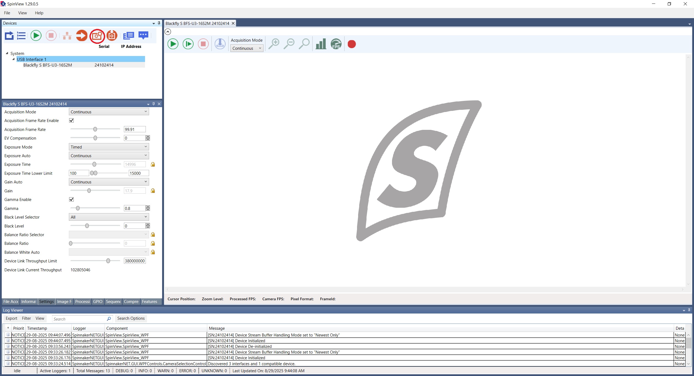 - After a new window pops up, click on its
Browsebutton to choose the firmware file. Then, click onStart. 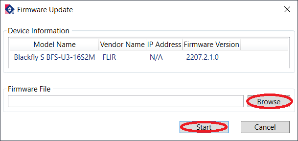
Camera Configuration
After having the correct firmware version installed, follow the instructions to configure the camera.
- Open the SpinView software.
- Select the camera to be configured.
- Click on the
Optimize camera frame ratebutton (see the figure below). - Click on
Features. - Click on the camera model name and then on
Acquisition Control. - Change the
Acquisition Frame Rateparameter to the desired value. Confirm that theAcquisition Frame Rate Enablesetting is checked. - Change the
Exposure Autosetting toOffand adjust theExposure Timeto the maximum possible so that the acquisition stays stably at 100 FPS. 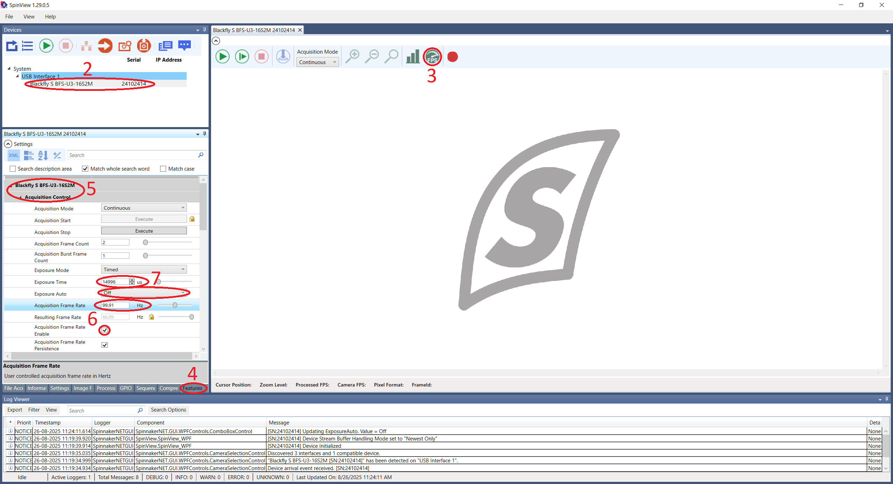 - Close the
Acquisition Controlsection and open the one namedDigital IO Control. - Select the
Line 2in theLine Selectorparameter. - Change the
Line ModetoOutput. 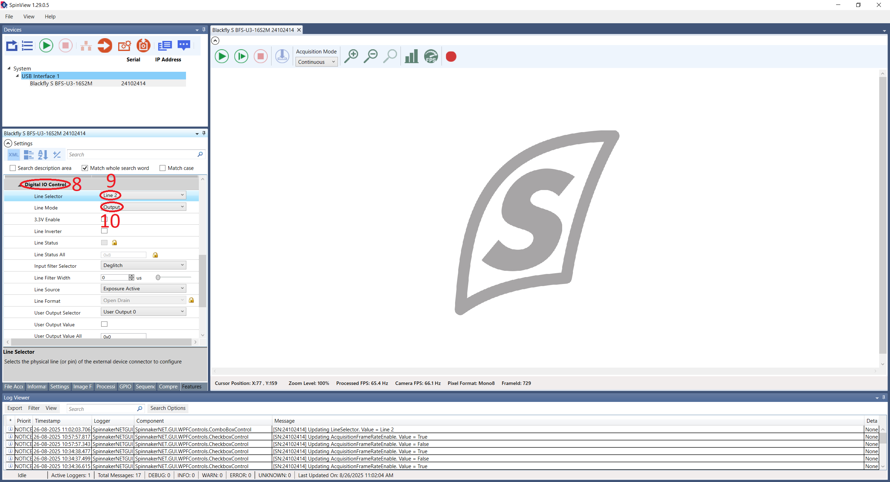 - Close the
Digital IO Controlsection and open the one namedUser Set Control. - Select an
User Set Selectorother thanDefault. - Select the same User Set in the
User Set Defaultparameter. - Finally, click on the
User Set Savebutton to save the current User Set. 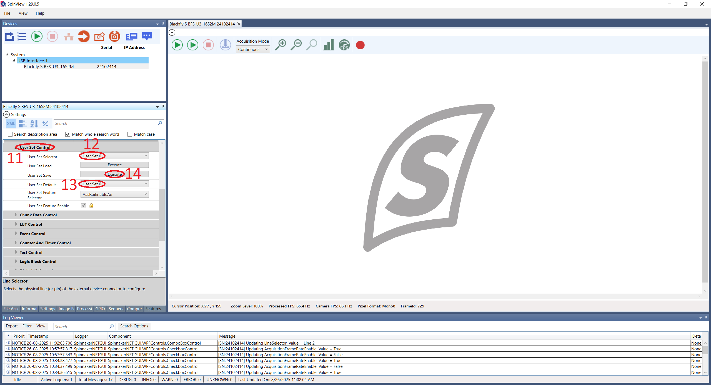 - Optional: Click on
Image Formatto change the camera resolution and save the User Set again.
Hardware Connections
In order for the camera to be able to communicate with the Harp Behavior, it's necessary that the camera GPIO cable is connected. The following connections shall be made:
- Line 2 (pin 3) from the camera to the Behavior's DI3 pin.
- Line 0 (pin 2) from the camera to the Behavior's DO0 pin.
Warning
Don't forget to connect the camera's grounds (pins 5 and 6) to the Harp Behavior's GND pins!
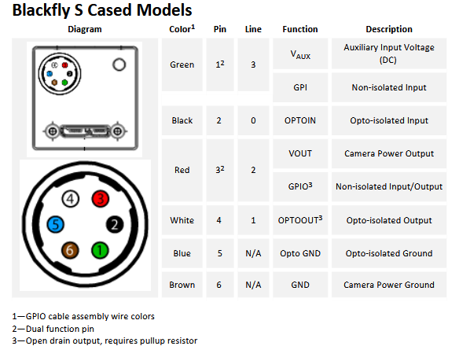
GPIO Cable Color Code
The color code for the CEI MVA-50-3-X-3 camera GPIO cable is as follows:
| Pin | Color |
|---|---|
| 1 | White |
| 2 | Brown |
| 3 | Green |
| 4 | Yellow |
| 5 | Gray |
| 6 | Pink |
| H | Shield |
PointGrey
After installing the PointGrey Drivers, connect the camera to the computer in an USB-3.0 port (connecting it to an USB-2.0 port limits the camera's capabilities, namely the frame rate).
Camera Configuration
To configure a PointGrey camera follow the instructions below.
- Open the Point Grey FlyCap2 software.
- Select the camera to be configured and click on the
Configure Selectedbutton. 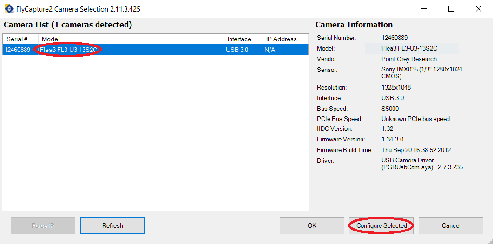 - In the
Camera Settingstab, activate theOn/Offcheckbox from theFrameRaterow and modify its value. 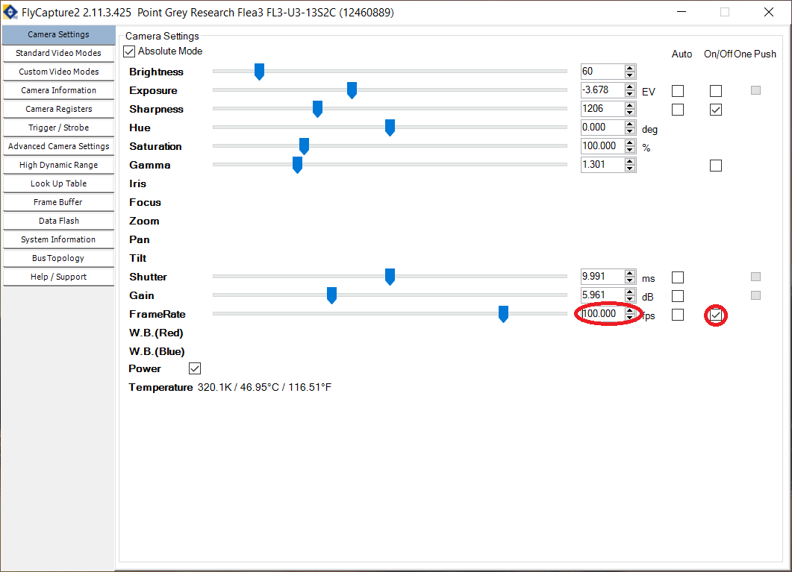 - Go to the
Trigger / Strobetab. - Select the GPIO 0 to be an input and the GPIO 2 to be an output.
- Under
Strobe Control, activate theEnable strobe for this pincheckbox for GPIO 2 and change the polarity toHigh. 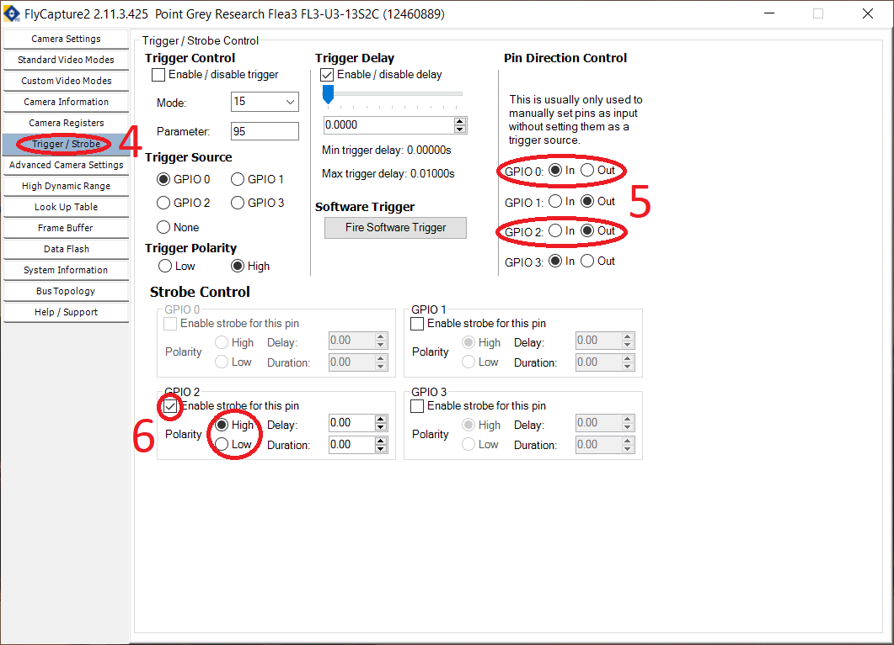 - Go to the
Advanced Camera Settings. - In the
Embedded Image Information, select the following fields:- Timestamp
- Frame counter
- Strobe pattern
- GPIO pin state
- In the
Memory Channelssection, select a channel different fromDefaultand click onSaveto save the current configuration. 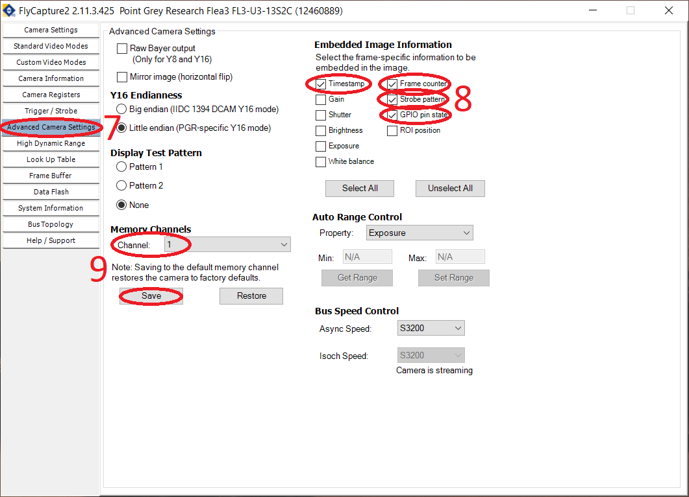 - Optional: Go to the
Custom Video Modesand modify the camera resolution. Then save the camera configuration again. 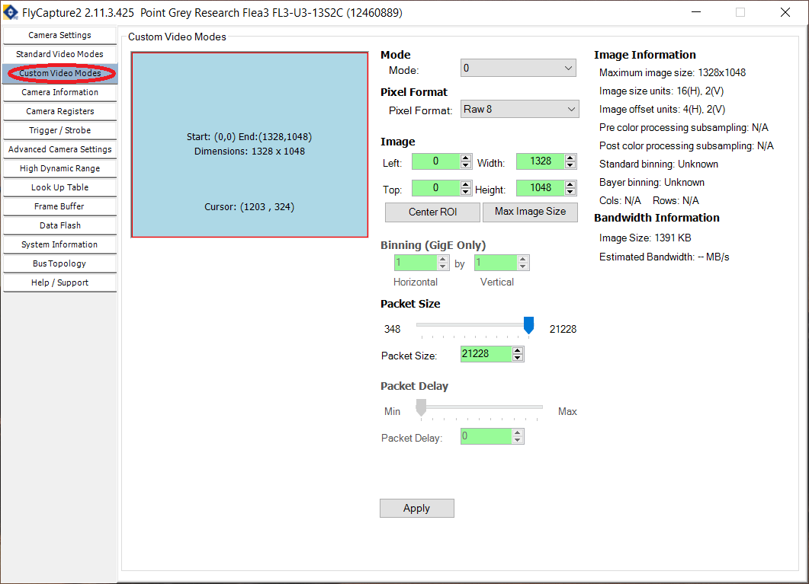
Hardware Connections
Since the GPIO cable used by the PointGrey cameras is different from the one used by the FLIR cameras, the connections that need to be made between the camera and the Harp Behavior are also different. The connections should be made as follows:
- Pin 1 (I0) from the camera to the Behavior's DO0 pin.
- Pin 3 (IO2) from the camera do the Behavior's DI3 pin.
Warning
Don't forget to connect the camera's grounds (pins 5 and 6) to the Harp Behavior's GND pins!
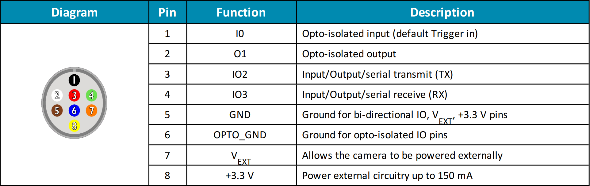
Note
In the actual GPIO cable, the color of the cable corresponding to pin 5 might be purple instead of brown!